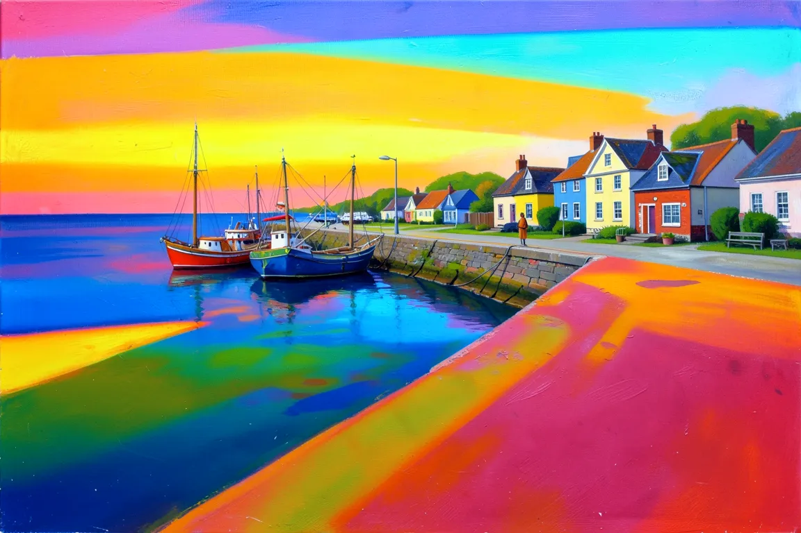

Very large canvases of broad, even fields of colour with soft edges. The colour is the subject; it is stained into the cloth or floated in layers, and it fills the sight of the viewer.

Core thesis
Colour alone can carry feeling and space: a large, simple field of hue, with no gesture and no drawing, surrounds the viewer and acts at once.
Design principles
Make the canvas large, 2m or more on one side, so that the field fills the view of a person at 1–2m.
Divide the picture into 1–3 broad fields of colour, with no drawn line.
Soak thin paint into raw or primed cloth, so that the colour is the cloth and no stroke shows.
Soften the edge of each field, with a feathered border of 20–60mm, so that the colour seems to glow.
Choose hues of close value and strong chroma, so that the fields pulse and hover.
Hold the layout simple and frontal, with fields stacked or spread on a plain rectangle.
Leave out the figure, the object, the horizon and the gesture.